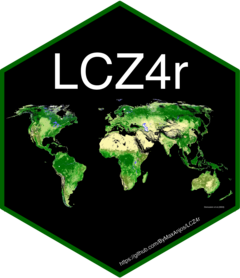

Introduction to Local Functions of LCZ4r
Max Anjos
2023-11-08
Source:vignettes/Introd_local_LCZ4r.Rmd
Introd_local_LCZ4r.RmdThis vignette serves as an introduction to the Local
functions of LCZ4r package. The local functions
are designed to operate with more extensive data inputs, such as urban
meteorological network readings, including air temperature.
Getting Started
The Local functions of LCZ4r, each
serving a unique purpose:
| Function | Description | Data Required | Internet Access Required |
|---|---|---|---|
lcz_ts() |
Analyze LCZ Time Series | Not needed | Not needed |
lcz_anamoly() |
Explore LCZ Thermal Anomalies | Not needed | Not needed |
lcz_interp_krige() |
Perform LCZ Interpolation with Kriging | Not needed | Not needed |
lcz_eval_krige() |
Evaluate LCZ Interpolation with Kriging | Not needed | Not needed |
lcz_interp_idw() |
Perform LCZ Interpolation with IDW | Not needed | Not needed |
lcz_eval_idw() |
Evaluate LCZ Interpolation with IDW | Not needed | Not needed |
lcz_uhi() |
Assess LCZ for Urban Heat Island Intensity | Not needed | Not needed |
Happy coding, and enjoy exploring the LCZ4r package!